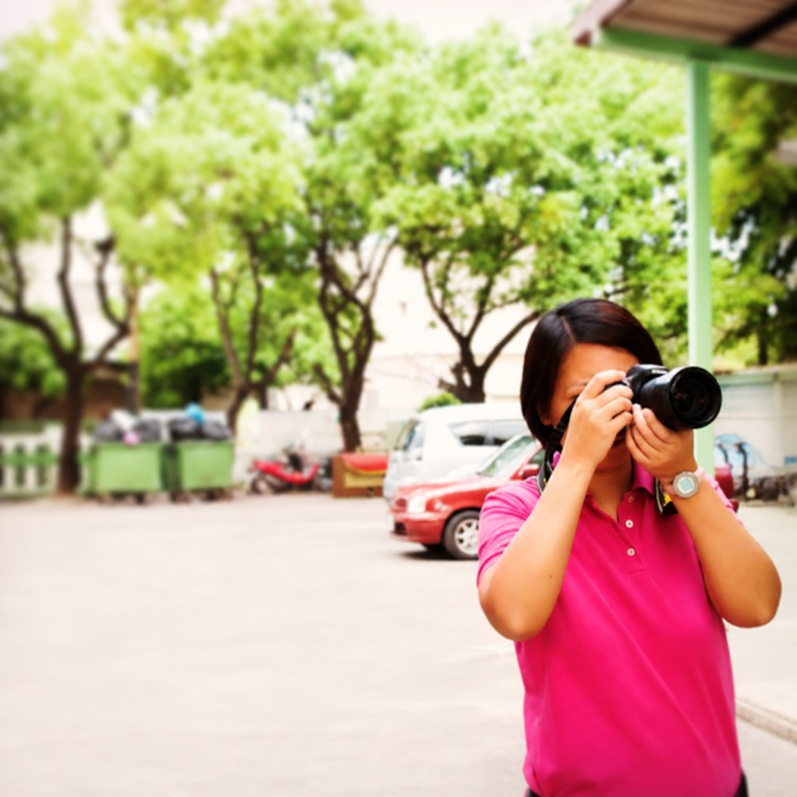

美麗之島｜Joyce 的服事

Joyce 的服侍
-
2016
我在2016年被呼召，從香港移居到美麗之島。三年後才明白，原來神在預備我，在此接待香港人。我在南部以自由傳道的身分，關心香港人；之後在中部教會牧養香港人。
-
2025.3
2025年3月，我正式加入服侍貧窮人及邊緣群體的群體服侍，主要職責是接待短宣隊和製作媒體（短宣隊大部分也來自香港）。由於這群體缺乏政府資助，所以資源上相對缺乏。我在加入前，就已經和負責人討論有關自籌薪金的事，不想自己的薪酬，再加重了這裡的負擔。
-
2026.10
2026年10月，香港差會優瓦薈正式接納我成為他們的宣教士。自此，除了我的服侍將會有更多人與我同行及守望外，也意味著大家的奉獻，將會收到可以在香港扣稅的收據。所以想在此邀請大家，如果你有感動，請將它化為行動！
索取宣教記念明信片
索取宣教記念明信片奉獻方式
捐款港幣 100 元或以上可獲香港免稅收據。
1. 劃線支票
- 抬頭：「優瓦薈有限公司」或「YOU WA HUI LIMITED」
- 郵寄地址：香港新界上水石湖墟郵局郵政信箱266號優瓦薈會計部收
- 註明奉獻給：美麗之島（Joyce）
2. 銀行過數或存款
- 中信(國際)銀行戶口：018-716-2-08038-3-00
- 戶口名稱：YOU WA HUI LIMITED
- 把入數紙電郵至 youwahui@gmail.com
- 或郵寄至：香港新界上水石湖墟郵局郵政信箱266號
- 優瓦薈會計部收
- 註明奉獻給：美麗之島（Joyce）
聯絡方式
謝謝您與我同行！